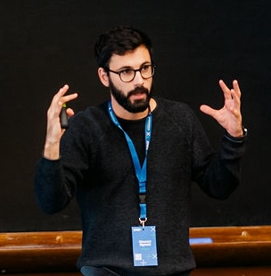

I am a Postdoctoral Fellow at the Nova School of Business and Economics, under the supervision of Professor Pedro Pita Barros. My main field of study is at the intersection between Health Economics and Industrial Organization. My scientific interests include pharmaceutical regulation, external reference pricing, and innovation. I obtained my PhD in Economics at the University of Verona in 2024 under the supervision of Professor Paolo Pertile.
In years of growing pharmaceutical spending, regulators have exerted substantial effort to reduce the impact of this tendency. As part of this strategy, several countries have introduced external reference pricing (ERP), whereby one country uses the prices of a set of other countries as a reference in regulating the domestic price. The widespread adoption of ERP creates potentially complex mechanisms of strategic interaction at an international level. Our theoretical analysis shows that strategic responses to the adoption of ERP by one country can create spillover effects with unintended consequences, including a reduced ability to contain costs compared to what would be expected if strategic responses were ignored. Our empirical analysis uses a dataset of 65 anticancer drugs in 16 countries, and exploits the introduction of ERP in Germany in 2011 as part of the AMNOG bill in a difference-in-differences framework. In line with the theoretical prediction, our preferred specification indicates that the introduction of ERP in Germany led, on average, to a 6.6% price increase in those countries that were included in the German reference set, relative to those that were not. Results are robust to a range of different model specifications, including a novel approach to correct for the potential bias related to the presence of confidential price discounts.